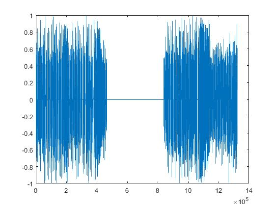
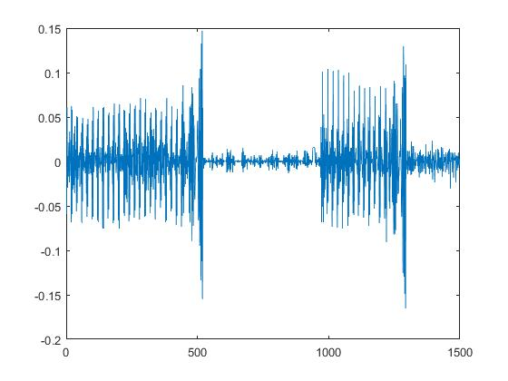

7th Assignment
Given Audio
For the given wav file when it is plotted in the matlab it gives the output as shown below
figure 1
Discriminating segment into Music from the given sample wav file
Our main objective is to segment audio signals and then to discriminate the resulting segments in speech and music. For that I have done frame by frame analysis on the audio signal. For the given signal the total number of non-overlapping frames found was 1500 of 20 msec. It is calculated by multiplying the the frame duration i.e 0.02s with the sampling frequency which was found to be 44100.So after analysing the signal frames Music part of the given audio signal is segmented from the voice. Music signal is plotted below:
figure 2
This signal plotted contains only music and the voice is remove as we can see few range of zero amplitude in the plotted figure. This segment is then discriminated and exported as a wav file with the help of the audiowrite() in matlab. The resultant wav audio is given below:
Discriminating segment into Voice from the given sample wav file
Similarly to segment the voice from the given audio signal, the signal with low amplitude is iteratively copied to a new frame through frame by frame analysis. Then the new signal is plotted and exported into wav file which as shown in the figure below:
figure 3
Resultant wav file is given below which contain only the voice that has been segmented from the given sample input
Average amplitude of in each frame
The average amplitude of the each frame is calculated by finding the mean of all the fs in each frame using mean() function in matlab. Total frames found is 1500 and therefore got 1500 average amplitude which is plotted below in the figure
figure 4
Code
Code for the about results


KARMA DORJI
UNIVERSITY OF CRETE